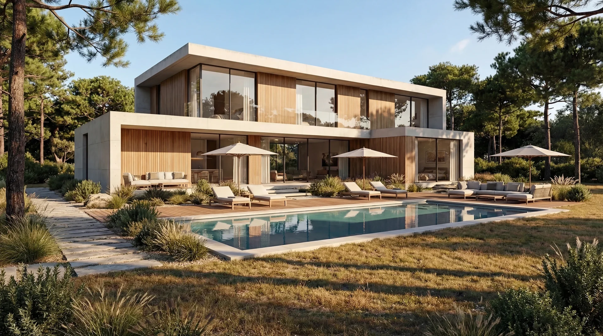
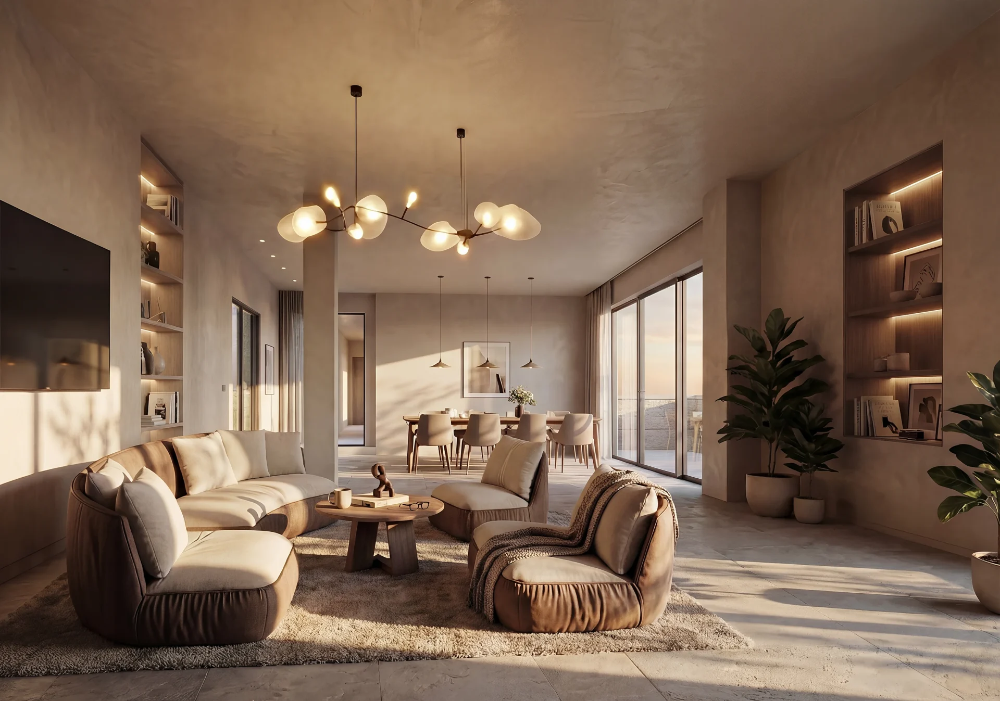
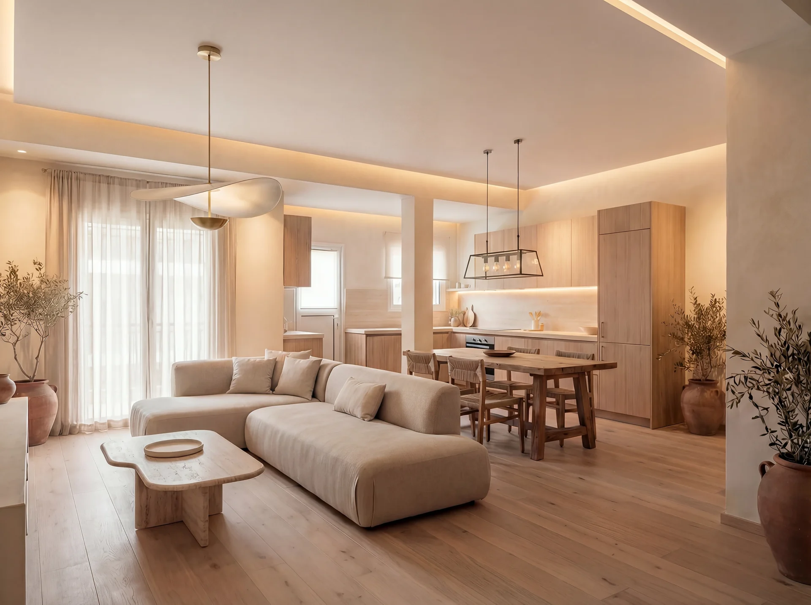

A residential project with clear priorities
A home must work spatially, technically and financially. We begin by understanding daily routines, future needs, the property or site, the available budget and the decisions that will define the project.
New homes
Private houses shaped around site, climate, planning constraints, family life and long-term use.
Complete renovations
Apartment and house transformations that address layout, structure, services, energy performance and material quality together.
Extensions and conversions
Extensions, lofts, terraces and changes of use developed around planning feasibility and a coherent relationship with the existing building.
Residential interiors
Layouts, kitchens, bathrooms, lighting, bespoke joinery, furniture, materials and finishes resolved as part of the architecture.
From brief to handover
Brief and feasibility
Needs, priorities, site or property constraints, planning exposure, target budget and programme are defined before design expands.
Design and budget alignment
Options are compared through space, performance, cost and buildability so the design develops around informed choices.
Technical design and permits
Architecture, interiors, engineering and required approvals are coordinated into clear technical documentation.
Procurement and construction
Contractor offers, materials, site progress, technical questions, quality, changes and budget status are reviewed against the approved project.
Handover and aftercare
Completion inspections, snagging, warranties, maintenance information and final documentation are coordinated for a controlled close.
What clarity means in practice
One named architect
A senior architect remains accountable for the agreed scope from the first meeting through delivery.
Documented scope
Responsibilities, fees, programme and decision points are set out before the appointment begins.
Options with consequences
Design alternatives are explained through their effect on space, budget, programme, performance and maintenance.
Visible progress
Regular communication and structured reporting keep decisions, risks and next steps visible during design and construction.
Project monitoring when you cannot be on site
Agreed site visits can produce written reports covering progress, quality observations, open technical questions, budget status and upcoming decisions.
Explore project monitoring →Wellbeing and long-term comfort
WELL-informed criteria bring natural light, acoustic comfort, air quality, material health and biophilic connection into the brief from the start. These are treated as design and performance decisions, not finishes selected at the end.
Selected residential work

Casa Boadilla
Residential architecture · Madrid

Luxury Renovation A75
Residential renovation · Madrid

Residential Rehabilitation K38
Residential renovation · Athens
Managing a home project from another country?
Our Villas and Second Homes service adds pre-purchase advice, remote coordination and structured project monitoring for international clients.
Explore villas and second homes →